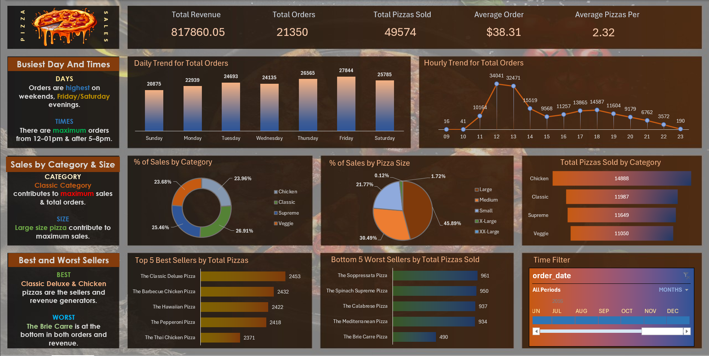

Yash Shirture
Sales Operations & Data Specialist | Dashboards • Data Cleaning • KPI Reporting
I transform chaotic data into structured intelligence that leaders can trust. Every dashboard I build is designed for accuracy, speed, and impact — because insights mean nothing if they can’t be acted upon.
📊 Portfolio Projects
Pizza Sales Reporting System (Excel Dashboard)
Designed an interactive Excel dashboard to analyze revenue trends, peak sales hours, and top-performing products, enabling data-driven business decisions.
View on GitHubInventory Risk Control System (Excel Dashboard)

Built a structured inventory monitoring system to track stock levels, detect risks of overstock/understock, and support efficient supply planning.
View on GitHubRoad Accident Risk Monitoring System (Excel Dashboard)

Developed a data-driven risk analytics dashboard to identify accident patterns, high-risk zones, and safety priorities using structured Excel analysis.
View on GitHub🧠 Skills
- Excel for Business Decision-Making: Pivot Tables, XLOOKUP, SUMIFS, Dynamic Dashboards, Scenario Analysis
- Data Engineering (Excel): Structuring raw data, validation rules, error handling, and automation-ready formatting
- KPI & Performance Reporting: Building actionable dashboards for sales, operations, and risk monitoring
- Business & Sales Operations Analytics: Trend analysis, pipeline tracking, and performance diagnostics
- Data Quality & Reliability: Deduplication, consistency checks, and audit-friendly documentation
🎓 Certifications & Virtual Experience

Microsoft Excel - Excel from Beginner to Advanced — Udemy

Deloitte Australia — Data Analyst Virtual Simulation — Forage
📬 Contact
📧 Email: yashatwork623@gmail.com
🔗 LinkedIn:
linkedin.com/in/yash-shirture-635153202/